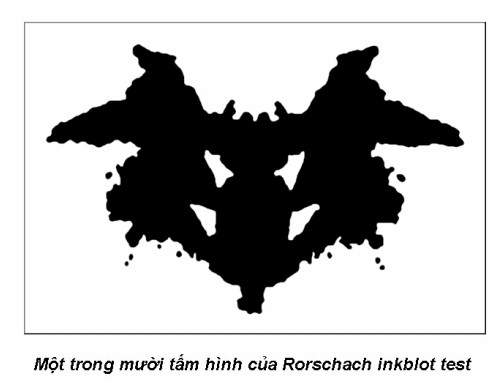

|
Thiền Quán và Tâm Thức Jack Kornfield
-ooOoo- Lời người dịch J ack Kornfield là một trong những sáng lập viên của Insight Meditation Society tại Barre, Massachusetts. Ông là vị thầy giáo thọ sáng lập trung tâm Spirit Rock tại Woodacre, California, và hiện giờ ông đang sống và giảng dạy ở nơi đây. Ông Kornfield cũng đã viết nhiều quyển sách về thiền tập như là: Seeking the Heart of Wisdom, A Still Forest Pool, Stories of the Spirit, Stories of the Heart, trong đó có quyển national bestseller: A Path with Heart và After the Ecstasy the LaundryDưới đây là bài nghiên cứu và nói chuyện của ông về đề tài Thiền Phật Giáo và Tâm Thức Học (Buddhist Meditation and Consciousness Research) mà ông đã trình bày tại Institute of Noetic Sciences, tại Sausalito, CA. Nhận thấy bài nghiên cứu của ông có trình bày những nhận xét và chia sẻ một số kinh nghiệm thiền tập rất sâu sắc, nên xin được phỏng dịch và gửi đến các bạn. Trong bài dịch tôi có chọn lọc và bỏ đi những đoạn giới thiệu Phật giáo dành riêng cho các thính giả Tây Phương. Hy vọng những kinh nghiệm thực tập của ông chia sẻ trong bài nói chuyện này sẽ mang lại cho chúng ta một niềm tin và soi sáng được một số vấn đề trong sự thực tập của chính mình. Nguyễn Duy Nhiên -ooOoo- Lời Giới Thiệu T ôi xin được phép trình bày qua một chút về quá khứ và kinh nghiệm của tôi. Tôi tốt nghiệp đại học Dartmouth College với chứng chỉ chuyên môn về nghiên cứu Trung Hoa và Á Châu, cùng với ngành triết học Phật giáo. Sau đại học, tôi gia nhập Peace Corps vào giữa thập niên 1960. Tôi xin được đi đến những quốc gia Phật giáo vì tôi muốn học hỏi thêm về Phật học. Tôi đến Thái Lan, và rồi xuất gia, và đi tu học tại nhiều tu viện khác nhau ở Thái lan, Miến điện, Ấn độ và Tích lan. Sau khi trở lại Mỹ, tôi lái taxi ở Boston, đi làm trong một bệnh viện tâm thần, và vừa đi học thêm môn tâm lý học. Tôi tốt nghiệp bằng cao học ở đại học Antioch College, và bằng tiến sĩ chuyên môn về Tâm lý học Thực hành (Clinical Psychology). Luận án tiến sĩ của tôi có liên quan về những hiện tượng của thiền Quán.Tôi đã có dịp sống trong một tu viện ở giữa rừng sâu, mà sự tu tập được đặt trên ba yếu tố chủ yếu sau đây. Yếu tố thứ nhất là một sự đơn giản tuyệt đối. Ta chỉ có một chiếc y và một bình bát. Mỗi sáng bạn ôm bình bát xuống làng và mang về ăn bất cứ những gì mà người ta cúng dường bạn. Bạn sống trong một ngôi chòi nhỏ thô sơ ở giữa rừng, với vài quyển sách. Một phần của sự tu tập là giữ cho mình tĩnh lặng, và ý thức rằng ta không cần đến những thứ bình thường vây quanh ta hằng ngày, mà ta nghĩ rằng chúng sẽ mang đến cho mình hạnh phúc. Yếu tố thứ hai là một hình thức từ bỏ. Chúng tôi có 227 giới lớn và 500 luật nhỏ phải giữ. Có những giới luật dường như không còn thích hợp và có ý nghĩa nữa sau hơn hai ngàn năm, nhưng chủ đích là giữ cho ta thực tập chánh niệm. Ta phải ôm bình bát như thế này, ta phải đắp y như thế kia. Mỗi hành động đều là một sự thực tập để phát triển chánh niệm. Và phần thứ ba là thực tập thiền quán. Ta thực tập giữ cho mình tĩnh lặng, và bắt đầu quan sát những hoạt động của tâm ý, nhất là những tâm ý nào mang ta ra khỏi giây phút hiện tại, và giữ cho ta không có mặt trọn vẹn được với sự sống này Sau thời gian tu tập trong rừng, tôi đi đến một tu viện và học với một thiền sư Miến điện nổi tiếng, ngài tên là Mahasi Sayadaw. Trong tu viện này, đặc biệt là các thiền sinh chỉ chú tâm duy nhất vào sự thiền tập đơn độc cá nhân. Ngoài những chuyện lặt vặt khác, phần lớn tôi đã sống khoảng 13 hay 14 tháng trời một mình trong một căn phòng, thực tập ngồi thiền và đi kinh hành. Mỗi sáng tôi im lặng đi lấy thực phẩm chỉ một lần. Vào mỗi một hay hai ngày, tôi rời phòng đi gặp vị thầy của tôi khoảng 15 phút để trình pháp, nói về sự thực tập của mình. Ngoài những việc ấy thì tôi lại ngồi thiền một tiếng, đi kinh hành một tiếng, ngồi một tiếng, đi một tiếng, từ 18 đến 20 tiếng mỗi ngày. Nói chung thì sự thực tập chánh là làm cho mình an tĩnh lại, chú ý đến bất cứ việc gì khởi lên và đặt tên cho nó. Sợ hãi, ham muốn, run sợ, toàn thân tan rã, cô đơn, hơi thở thanh nhẹ - ta chỉ đơn giản nhận diện và gọi tên nó, mỗi lúc một rõ rệt và chính xác hơn, vừa khi chúng mới khởi lên. Những tháng đầu thực tập sẽ là những cơn bão lớn của cảm xúc, lẽ dĩ nhiên là vậy, nhưng mục đích của sự thực tập là làm sao ta có thể bắt đầu nhìn vượt qua khỏi những hình tướng bên ngoài của những kinh nghiệm thuộc giác quan, để thấy được chân tướng của mọi hiện tượng trong cuộc đời. Và có thời gian tôi tu tập với một vị tu sĩ trong một tu viện, thực tập theo phương pháp thiền định tập trung vào bộ tim, như là tụng niệm, trì chú, quán tưởng, quán tâm từ… mỗi ngày từ sáng cho đến khuya. Tôi sẽ trình bày thêm về kinh nghiệm này sau. Ở một tu viện khác, tôi thực tập về một phương pháp quán chiếu, có nghĩa là thay đổi cái tiến trình nhận thức và suy nghĩ của mình, như là cứ tự hỏi mình, lặp đi lặp lại câu hỏi ấy để quán chiếu. Nói chung thì tôi đã có dịp thực tập qua nhiều pháp môn khác nhau, và tôi trình bày tuy ngắn gọn, nhưng tôi nghĩ nó có thể giúp quý vị hiểu hơn về những gì tôi sắp chia sẻ. -ooOoo- Nghiên Cứu và Tìm Hiểu Về Thiền P hần lớn thì những tìm hiểu và nghiên cứu về thiền của chúng ta ở xứ sở này còn rất ấu trĩ. Lúc ban đầu, người ta chỉ chú trọng nhiều về những đo lường có liên quan đến các hiện tượng sinh tâm lý. Đa số những nghiên cứu ấy có giả định cho rằng thiền chỉ có một trạng thái duy nhất, và đó là một giả định rất sai lầm. Thật ra có đến hằng trăm hay hằng ngàn các trạng thái thiền định khác nhau. Chúng ta không thể nào nói rằng mình biết đại dương là gì khi ta chỉ nhìn thấy một khoảng nhỏ của vịnh San Francisco Bay. Thiền có nhiều trạng thái khác nhau, chúng được khơi lên qua nhiều đường lối khác nhau, chúng có đủ loại màu sắc, đặc tính, tầng cấp và ảnh hưởng khác nhau.Và, thiền không nhất thiết phải phát triển theo một đường thẳng, mặc dù ở đây tôi sẽ trình bày theo một mô hình thẳng cho dễ hiểu. Và bây giờ điều đầu tiên hết, trước khi ta tìm hiểu sâu hơn về vấn đề nghiên cứu thiền, ta nên thử nhìn sơ qua tấm bản đồ căn bản của nó. Những trạng thái chánh của thiền là gì? Những con đường nào dẫn ta đến các trạng thái ấy? Chúng có những liên hệ gì với nhau? Và từ đó ta sẽ có thể tìm hiểu thêm về những trạng thái cũng như ảnh hưởng của chúng trên một bình diện dài lâu và thâm sâu. -ooOoo- Kinh Nghiệm Trong Một Khóa Tu Thiền Quán T ôi xin được trình bày đến quý vị về kinh nghiệm của ba tháng thiền quán Vipassana, cũng như nêu lên một số vấn đề cho những bạn nào thích tìm hiểu, nghiên cứu về thiền quán.Thường thì mỗi khóa tu ba tháng như vậy có khoảng chừng một trăm người tham dự. Tất cả cùng phát nguyện giữ thinh lặng trong vòng ba tháng – chỉ được phép nói chuyện với vị thầy mỗi ngày khoảng 10 – 15 phút trong giờ trình pháp. Các thiền sinh tinh tấn thực hành thiền tập: ngồi thiền một tiếng, đi kinh hành một tiếng, ngồi một tiếng, lại đi một tiếng, và cứ tiếp tục như vậy, mỗi ngày từ khi thức dậy lúc 5 giờ sáng, cho đến khi đi ngủ vào lúc 10 giờ tối, hoặc có khi là nửa đêm. Thiền sinh chỉ nghỉ vào giờ ăn trong chánh niệm, cũng như lúc tắm rửa, mọi công việc đều được làm với một ý thức rõ ràng trong suốt ngày. Và việc gì sẽ xảy ra khi người ta thực tập như thế? Đầu tiên hết là sẽ có đủ mọi những kinh nghiệm rất sâu sắc xảy ra trong thân, và đôi khi, là những trường hợp chữa lành bệnh rất kỳ diệu. Khi ta ngồi giờ này sang giờ khác và thật sự chú ý đến những gì xảy ra trong cơ thể của mình, thân ta sẽ bắt đầu thư giãn và mở ra. Và những chuyển hóa sâu sắc nhất sẽ tự nhiên xảy ra mà không cần ta phải làm gì hết, chỉ đơn giản chú ý đến cái tiến trình của nó. Tôi đã từng thực hành nhiều phương pháp, cách thức trị liệu cơ thể khác nhau, nhưng chưa có phương cách nào lại có thể so sánh với cái năng lượng chuyển hóa của thiền quán, phát xuất từ bên trong, khi ta ngồi trong chánh niệm liên tục nhiều ngày như vậy. Sẽ có một sự tháo gỡ những gút mắt trong thân xảy ra. Sẽ có những động tác cơ thể tự nhiên phát khởi, có những trường hợp thiền sinh tự nhiên uốn thân vào những tư thế du-già đặc biệt. Có người cảm thấy như có lửa hay sự lạnh buốt di chuyển trong thân. Những trạng thái ấy thường được các thiền sinh diễn tả như là những luồng năng lượng của các luân-xa theo Ấn độ giáo, hoặc như là những đường kim châm cứu. Và chính những phương pháp của các vị như Jon Kabat-Zinn, Joan Borysenko và Stephen Levine cũng đã đặt nền tảng trên nguyên lý rằng thiền chánh niệm có thể làm khơi động một năng lượng trị liệu rất sâu sắc. Giáo sư Herbert Benson của đại học Harvard cũng đã thử nghiệm trên các vị sư Tây tạng, cho thấy rằng các vị ấy có thể dùng thiền định để khiến cơ thể phát ra một nhiệt lực rất mạnh, điều này cho ta thấy chúng có thể kiểm chứng được. Và cũng có một sự bùng vở trong lãnh vực cảm xúc xảy ra. Chúng có thể là những cơn bão của hạnh phúc, ưu sầu, cô đơn, sợ hãi, hoặc hỷ lạc… trôi ngang qua ta biến đổi như thời tiết, và cũng có thể chúng ở lại ngay trong thân ta một thời gian. Có một phương pháp giúp ta nhận diện và tiếp xúc với những cảm giác ấy, những ký ức và cảm xúc trong thân, danh từ Phật học gọi là các tâm hành (samskaras), ở những nơi khác nhau trong thân mình. Trong thiền quán, ta có thể chọn một nơi nào có nhiều vấn đề trong thân, và đặt sự chú ý của mình vào nơi đó trong một thời gian. Khi sự chú ý của ta kiên trì đúng mức, nó sẽ dần dà khai mở được hết những ký ức, hình ảnh và ý niệm mà nó hằng ôm giữ chặt ở đó. Và cuối cùng, tất cả những gút mắt ấy trong thân sẽ được tháo gỡ và cởi mở ra hết. Chúng có thể là những gì mà bạn đã hằng mang giữ trong bạn suốt đời mình, nếu không nói là nhiều kiếp trước nữa. Và sự thực tập này cũng khơi lên một số vấn đề khá thú vị khác nữa. Một Vài Vấn Đề Thú Vị Trong những khóa tu, một điều kiện giúp cho những sự khai mở này có thể xảy ra được là một môi trường nghiêm túc và thích hợp. Môi trường ấy giúp tạo nên một hoàn cảnh, một không gian an toàn cho một sự khai mở sâu thẳm. Điều ấy rất quan trọng, những không gian nghiêm túc trong những khóa tu nhất thiết cần phải được ghi nhận và duy trì. Và thường thường, các thiền sinh cũng có thêm những kinh nghiệm kế tiếp sau đây, mà tôi gọi là lịch sử cá nhân (personal history). Nhiều người có những kinh nghiệm về quá khứ của mình rất là sâu xa. Ví dụ, có người khi vào gặp tôi để trình pháp họ nói rằng, "Hôm nay, đến giờ ăn trưa tôi đi xuống phòng ăn. Trong khi nhai đột nhiên tôi thấy mình trở lại thành một đứa bé một tuổi. Tôi thấy mình đang ngồi đó cầm chiếc muổng và đập mạnh xuống bàn." Trong thiền quán, những hình ảnh hoặc ý niệm quan trọng về những cảm nhận của ta đối với chính mình hoặc người khác, chúng sẽ khởi lên. Như tôi đã trình bày, các thiền sinh thường hay có những kinh nghiệm về ký ức thời ấu thơ của mình, ngay cả trước khi biết nói, họ thấy rất rõ được cơ thể của mình cảm xúc như thế nào trong những tháng đầu đời, những bước chân chập chững tập đi có cảm giác ra sao, những mùi vị của món ăn đầu tiên. Và trong thời gian trở về quá khứ này, sẽ có những vấn đề khó khăn, những nội kết mà chúng ta đã vô ý thức ôm giữ nó trong thân, trong tâm và tình cảm của mình từ bấy lâu nay. Chúng sẽ tự nhiên sàng lọc lại, khởi lên và muốn được ghi nhận. Và có một câu hỏi được đặt ra ở đây mà tôi nghĩ chúng ta cần nên tìm hiểu thêm. Chúng ta có thể tin tưởng rằng mọi việc sẽ được khai mở một cách có lớp lang và thứ tự chăng? Chúng ta có cần phải trực tiếp hướng dẫn những cảm xúc ấy, hay ta để cho chúng khai mở tự nhiên và chỉ cần tạo một không gian và điều kiện thích hợp thôi là đủ rồi? Sơ Định, Cánh Cửa Hạnh Phúc Và cuối cùng hết, thiền sinh sẽ đi đến một kinh nghiệm gọi là sơ định hay là định cận hành (access concenrattion). Sơ định là một cánh cửa mở rộng ra cho ta bước vào con đường giải thoát và hạnh phúc. Tâm ta lúc này đã được yên. Đến giai đoạn này, trong thân ta không còn một gút mắt hoặc đau đớn nào nữa hết, những cảm xúc mãnh liệt cũng giảm bớt đi, những tư tưởng thương, ghét, quá khứ, tương lai cũng từ từ chậm lại. Không còn những dính mắc nữa, tâm ta sẽ cảm thấy thật yên và hạnh phúc. Những tư tưởng vẫn sẽ tiếp tục khởi lên, nhưng ta không còn bị dính mắc và bị chúng lôi kéo nữa. Ta sẽ có khả năng theo dõi được những tư tưởng của mình khởi lên và rồi qua đi. Thật ra, bạn sẽ có thể cảm nhận được một cảm giác nhẹ trong thân trước khi có một tư tưởng khởi lên, cũng giống như một bong bóng nước trồi lên mặt. Bạn có thể biết rằng có một tiến trình tư tưởng đang phát khởi từ phần tiềm thức (unconsciousness) và đi qua phần ý thức (consciousness). Lúc này, bạn có đủ sự tĩnh lặng để thấy được tiến trình của nó, thay vì bị dính mắc vào phần nội dung của nó. Giai đoạn này gọi là sơ định, hay là cận hành định. Đến giai đoạn này bạn sẽ có được một niềm tin rất lớn trên con đường tu tập, vì bạn có thể nhìn và tiếp xúc được với mọi sự việc một cách mới mẻ, như chưa từng có bao giờ. -ooOoo- Những Tầng Lớp Thiền Quán Định là điều kiện đầu tiên Định, hay tập trung, là một cây chìa khoá quan trọng trong thiền tập. Khi ta có định, nó có nghĩa là tâm ta đã được vững vàng, tự chủ và có mặt, và nhờ vậy mà tâm ta cũng trở nên mềm mỏng hơn. Ta có thể hướng dẫn nó hoặc uốn nắn nó theo ý. Ta có thể đặt tâm mình ở nơi này thì nó nằm yên ở nơi này, hoặc đặt ở nơi kia và nó cũng sẽ nằm yên ở nơi kia. Ta cũng có thể mở rộng nó ra hoặc thu đóng nó lại. Nói một cách khác, tâm ta lúc ấy cũng giống như một lăng kính của máy chụp hình xa, ta có thể điều khiển nó để nhìn gần hoặc xa tùy theo ý muốn. Và cũng có một vấn đề thú vị khởi lên, có liên quan đến những phương cách mà có thể giúp ta đạt đến một trạng thái tâm thức mềm dẽo này. Những Cảm Nhận Giác Quan Biến Đổi Và bây giờ, khi tâm ta được an tĩnh và tập trung, thường thường ta sẽ cảm nhận có một sự hỷ lạc và ánh sáng. Có năm trạng thái hỷ lạc. Từ những cảm giác lâng lâng nhẹ, thấy một màn ánh sáng mờ, cho đến những vầng sáng chói chan (như có ai dọi đèn pha vào mắt bạn), hoặc cảm thấy thân mình tan rã vào ánh sáng. Đôi khi trạng thái hoan hỷ ấy mãnh liệt đến mức có thể làm bạn cảm thấy đau đớn, khó chịu, cũng như một cảm giác sung sướng quá độ và kéo dài quá lâu. Nếu quý vị muốn tìm hiểu thêm về những trạng thái này, chúng ta cũng có những tài liệu trình bày rất rõ. Những giác quan của bạn cũng bắt đầu biến đổi khi bạn đạt đến một trạng thái định này. Khứu giác của bạn trở nên tinh tế hơn. Tôi còn nhớ thời gian tu tập trong một tu viện, lúc ấy tâm tôi được rất an tĩnh, một buổi sáng tôi ôm bình bát xuống làng khất thực. Tôi chợt cảm thấy mình có giác quan bén nhạy như một con chó. Thường ngày khứu giác của tôi rất tệ, nhưng buổi sáng hôm ấy, trong mỗi một hay hai bước chân, tôi ngữi được một mùi mới khác nhau. Họ nấu món này ở phía bên đây, họ đang nấu món nọ ở phía bên kia. Có mùi khai ở chỗ này, có con vật gì chết ở nơi kia. Tôi hoàn toàn sống trong một thế giới tâm thức của thần kinh khứu giác. Thị giác hoặc thính giác của bạn cũng biến đổi, bạn có thể lắng nghe được những âm thanh, tiếng động hết sức vi tế mà bạn chưa từng nghe bao giờ, hoặc nhìn thấy những vật rất nhỏ li ti. Tôi tin rằng những sự khai mở này của giác quan có thể đo lường được, vì vậy chúng ta có thể nghiên cứu và tìm hiểu thêm về chúng. Một sự ngẫu nhiên là luận án tiến sĩ của tôi cho đại học Saybrook Institute, một phần là trình bày những kinh nghiệm mà hành giả có được trong thiền tập - chúng có thể là những cử động tự nhiên vô ý thức, hoặc cảm nhận về cơ thể biến đổi hay nhận thức thay đổi. Tôi ví dụ, nếu bạn bước đi trong khi mình đang ở trong một trạng thái định sâu, căn phòng này có thể cảm thấy như một chiếc tàu lắc lư hay là bốn bức tường như ngả nghiêng. Bạn có thể cảm thấy không biết mình nên đặt chân xuống nơi nào. Thế cho nên, những nhận thức giác quan của ta cũng bị thay đổi, nhiều khi là song song với cảm nhận biến đổi của cơ thể. Thường thường, người ta hay có những nhận xét như là: "Tôi có cảm giác như mình đang bay bổng", "Tôi cảm thấy như một tảng đá", "Thân tôi như hóa thành mặt trời và sức nóng", "Thân tôi lạnh cóng như băng và tôi cảm thấy như tuyết giá." Con Đường của Định Ở thời điểm này, có một vấn đề khởi lên là ta sẽ chọn để tiếp tục con đường thiền tập của mình như thế nào. Và đây cũng chính là một tuệ giác quan trọng của đức Phật. Một sự lựa chọn là ta cứ tiếp tục tập trung vào một đối tượng duy nhất, đó có thể là hơi thở của mình, ánh sáng của một ngọn nến, hay là một hình quán tưởng nào đó. Và nếu bạn tiếp tục tập trung vào một đối tượng duy nhất, bạn có thể đi sâu hơn vào trạng thái định an tĩnh, hay an chỉ định, và nơi đây cũng vậy, cũng có những tầng lớp thiền và trạng thái tâm thức khác nhau, khi ta trở thành là một với đối tượng mà mình quán tưởng. Đây là những trạng thái rất là huyền diệu và hấp dẫn, chúng tràn ngập niềm vui, hạnh phúc, nhẹ nhàng, hỷ lạc, của một bầu không gian và một trời tâm thức vô biên. Chúng đôi khi còn được gọi là cõi thiên trú, tức là những nơi cư ngụ của các vị trời. Nhưng trạng thái này cũng vẫn còn có một giới hạn, vì tuy rằng ta có một kinh nghiệm về mình như là một không gian hoặc một tâm thức vô biên, nhưng vẫn còn có một người, một cá nhân nào đó làm chủ thể. Vì vậy cho nên, tuy một vị trời có thể sống hằng tỷ năm - điều này cũng có nghĩa là những trạng thái tâm thức này hiện hữu trên một bình diện thời gian khác - nhưng cuối cùng rồi thì nó cũng sẽ chấm dứt. Và rồi ta trở lại với thế giới của sanh tử, sau khi hết thời hạn ở cõi trời ta lại trở về với thế giới của ngạ quỷ hay một nơi nào đó, tùy theo nghiệp quả hoặc sự ham muốn của mình dẫn dắt. Tôi sẽ nói thêm về những tầng định sau. Con Đường Của Quán Và một con đường khác mà ta có thể chọn vào lúc này, giai đoạn đầu của sơ thiền, là ta không cần phải trở thành làm một với đối tượng thiền tập của mình. Đây là những con đường của thiền quán vipassana, zen và những pháp môn tương tự, mà tôi nghĩ có lẽ một vài phương pháp chú tâm của Gurdjeff cũng thuộc vào loại này. Theo phương pháp của thiền quán, ta chỉ cần quan sát và theo dõi sự phát sinh và mất đi của mọi hiện tượng, mà không tập trung hoặc trói buộc sự chú ý của mình vào bất cứ một đối tượng nào duy nhất hết. Những Tầng Lớp của Tuệ Giác trong Thiền Quán Khi tâm mình được tĩnh lặng và khi bạn thật sự chú ý đến tiến trình của thân và tâm, sẽ có một chuỗi sự kiện rất thú vị xảy ra. Chuỗi sự kiện ấy xảy ra không theo thứ tự của một đường thẳng, nhưng tôi nghĩ cách dễ nhất là ta hãy diễn tả chúng như một đường thẳng. Trước hết, ta sẽ có một tuệ giác về danh sắc, hay thân-tâm (body and mind). Khi bạn có chánh niệm và chú ý thật kỹ, bạn sẽ nhận thấy rằng trong mỗi giây phút, sẽ có một kinh nghiệm vật lý của nó (sắc) - ví dụ như ta cảm nhận hơi thở của mình - và tiếp theo là một ý nghĩ, ý tưởng hay là đặt tên cho nó (danh) - "Ồ, đó là hơi thở vào". Bạn sẽ bắt đầu có thể tách rời, và phân biệt được giữa những sự kiện nơi tâm (danh) và những sự kiện nơi thân (sắc). Những sự kiện danh-sắc hay thân-tâm ấy, chúng liên hệ rất mật thiết với nhau, nhưng chúng vẫn có thể phân biệt được. Và từ đó, một thế giới dường như rất rắn đặc của những giác quan và của một cái tôi sẽ bắt đầu tan rã. Lúc ấy bạn sẽ thấy được rằng, cái tôi của mình đơn giản chỉ là những giây phút của một kinh nghiệm vật lý cùng với những phản ứng tâm thức đối với kinh nghiệm ấy. Và tất cả chỉ giản dị là có vậy thôi. Một sự khởi lên của một cặp đôi. Trong kinh đôi khi còn gọi đây là tuệ giác về phân biệt danh sắc. Giai đoạn thứ hai của tuệ giác sẽ khai mở trong khoảng thời gian vài ngày, vài tuần hay vài tháng, khi sự chú ý của ta trở nên sâu sắc và tinh tế hơn. Đây là một tuệ giác về duyên sinh, khi bạn thấy được rõ rằng giây phút này khởi lên là tùy thuộc vào điều kiện của một giây phút khác. Bạn nghe một tiếng chim hót, kế tiếp là hình ảnh một con chim hiện lên trong đầu, rồi bạn nhớ đến một con chim bạn thấy hồi còn nhỏ, tiếp theo đó có thể bạn ý thức rằng mình đang ngồi thiền và ghi nhận được những kinh nghiệm ấy khởi lên, và rồi có thể là một cảm giác tự hào nổi lên – "Mình cũng ghi nhận được khá đó chứ” – hoặc là một ý nghĩ tự trách móc nào đó. Dầu gì đi nữa, ở giai đoạn này, bạn có thể nhận thấy và kinh nghiệm được rất rõ rằng mỗi một sự kiện là một điều kiện, nhân duyên cho sự kiện kế tiếp xảy ra. Luật điều kiện và nhân duyên, thống trị hết mọi trạng thái tâm thức, sẽ tự biểu hiện ra rất rõ rệt trong giai đoạn này. Vào giai đoạn kế tiếp, những kinh nghiệm về các ảo tượng sẽ xuất hiện. Ta sẽ bàn thêm về chúng trong phần nói về các biến chứng phụ (side effects) của thiền quán. Những kinh nghiệm này sẽ mang lại cho ta một cảm nhận rằng, tất cả chỉ là một tiến trình tâm thức lưu chuyển từ giây phút này sang giây phút kế, vô thường, biến đổi liên tục, không thể nắm bắt được. Nó không có dính dáng gì đến cái tôi hoặc của tôi. Nó hoàn toàn theo những quy luật riêng của nó. Ở giai đoạn này, bạn chỉ cần ngồi yên và theo dõi sự việc tự chúng đến và đi, mà không hề can thiệp hay xen vào. Bạn an trú trong tâm ý mình. Khi tâm thức của ta trở nên sâu sắc hơn, những ảo tượng và cám dỗ này sẽ đến và rồi tự động qua đi. Nhận Thức Về Sinh Diệt Có Thể Mang Lại Hạnh Phúc Và khi sự chú ý của ta trở nên thâm sâu hơn nữa, ta sẽ kinh nghiệm được cái mà trong sách gọi là kinh nghiệm về sinh diệt. Giai đoạn này, ta có cảm tưởng như thân-tâm mình trở nên một thác nước, hay một cơn mưa, mà ta không còn có thể đặt tên cho những kinh nghiệm của mình nữa. Bạn kinh nghiệm thân và tâm mình như những chấm nhỏ của cảm giác, tư tưởng và ký ức, chúng hoàn toàn rời rạc với nhau, tất cả khởi lên rồi mất đi như những hạt mưa rơi tan biến trên một vũng nước. Cảm nhận về một cái gì kiên cố và rắn chắc của ta hoàn toàn tan rã. Ở thời điểm này, sẽ có cái mà Daniel Goleman, trong quyển The Varieties of Meditative Experience, gọi là một niết-bàn-giả-tạo khởi lên. Trong một khóa tu ba-tháng thì có độ chừng 20 thiền sinh trong số 100 thiền sinh sẽ có một kinh nghiệm này. Tâm ta rực sáng. Nơi nào ta nhìn cũng sáng chói. Ta tràn ngập ánh sáng và cảm thấy một niềm hạnh phúc, sáng tỏ và vui sướng mãnh liệt. Nói một cách khác, tất cả những gì huyền diệu mà bạn nghe diễn tả về con đường tâm linh đều xảy ra trong trạng thái niết-bàn-giả-tạo này! Và giai đoạn này cũng có một vấn đề. Thiền sinh dễ ưa thích và bị kẹt vào đấy. Họ nói, “Tôi đã đạt được rồi và tôi rất là thích!" Bạn ôm giữ những trạng thái này như chúng thật sự là của mình, mặc dù đó hoàn toàn là một tuệ giác sai lầm. Vì vậy mà ta gọi nó là một niết-bàn-giả-tạo là vậy. Trong thời điểm này, ta cần phải mạnh dạn và có một cái nhìn thật sâu sắc để nhận diện được nó. Trong giai đoạn này sẽ có một tuệ giác phát khởi, mà nó cũng là một trong những tuệ giác quan trọng và chủ yếu nhất của đạo Phật. Nó xảy ra một cách rất tự nhiên, cũng giống như ta đang ngồi trong một căn phòng tối và đột nhiên có một người nào đó bật đèn lên vậy. Ta nhận thức được rằng, khi ta ở trong trạng thái hạnh phúc này lâu đủ rồi, là sẽ không có một trạng thái tâm thức nào, và cũng không có một quyền lực hoặc một kiến thức nào, thật sự có khả năng giúp cho sự giải thoát của mình. Trên con đường tu tập, quyền lực và kiến thức rất là rẻ rúng, chúng chẳng có một giá trị nào hết. Chúng hoàn toàn khác biệt với sự giải thoát. Vì vậy, chỉ khi nào bạn thật sự kinh nghiệm và nhận thức trực tiếp rằng, ta phải buông bỏ hết tất cả mọi việc, thì mới có thể nói chuyện vượt thoát sanh tử và bước đi thong dong được. Và đây là một khám phá rất lớn và chủ yếu. Nhận Thức Về Sinh Diệt Có Thể Mang Lại Một Sự Sợ Hãi Tiếp theo tuệ giác ấy là một nhận thức về sự tiếp nối liên tục của tiến trình sinh-tử, nó cũng tương tự giống như những bản đồ về cái chết của Stanislav Grof vậy. Đến giai đoạn này, nhờ bạn đã có khả năng buông bỏ hết những dính mắc về hạnh phúc, quyền lực, chói sáng, những vẽ đẹp mà đã đến với bạn, chánh niệm của bạn cũng được trở nên tinh tế hơn, và bạn có thể nhìn thấy sâu sắc ngay vào cái tiến trình của chính nó. Lúc ấy, thay vì nhìn thấy mọi vật sinh lên rồi diệt đi, bạn bắt đầu nhận thức rằng chỉ có mỗi một sự tan rã mà thôi. Bất cứ nơi nào bạn nhìn chỉ có sự tan rã. Nghe một tiếng động, bạn kinh nghiệm sự chấm dứt của nó. Có một tư tưởng, bạn kinh nghiệm sự chấm dứt của nó. Bạn có một cảm xúc, nó chấm dứt. Tâm thức bạn lúc này cũng giống như một vùng cát sa lầy vậy, tất cả biến mất. Ở trạng thái tâm thức này tất cả mọi hiện tượng đều tan hủy. Và kinh nghiệm về sự tan rã này sẽ làm phát sinh trong ta một nỗi sợ, đôi khi có thể là một sự kinh hãi lớn. Vì lúc này, bạn ý thức được rằng không có một nơi nào, một căn cứ nào, mà con người có thể đứng vững được. Không có một căn cứ nào hết, và đó là sự thật tuyệt đối. Tất cả những kinh nghiệm của ta đều là sản phẩm của tâm thức mình, và không có một trạng thái tâm thức nào lại có một bản thể thực chất hết. Ý niệm đặt cái tôi của mình trên bất cứ một nền tảng nào đều hoàn toàn sai lầm. Và từ trạng thái sợ hãi đó, thiền sinh có thể sẽ bước sang những trạng thái buồn khổ, ghê sợ và đè nén. Bạn có cảm tưởng như thế giới này đang áp bức bạn, bạn có kinh nghiệm như thân mình đang hủy hoại. Tôi ví dụ, bạn có thể nhìn xuống thân và thấy như có những mảnh thịt của mình rớt ra còn đeo lủng lẳng trên người, bạn có thể thấy mình đã chết hằng trăm ngàn lần qua trăm ngàn lối khác nhau, hay là bạn cảm thấy một sức nặng đè nát mình, như là ta đang đội cả trái đất này trên đầu vậy. Những kinh nghiệm về các ảo tượng khác cũng khởi lên, đủ hết mọi hình ảnh về các nguyên mẫu (archetype). Bạn có thể chứng kiến những cuộc chiến tranh đã xảy ra hằng ngàn năm trước hiện ra ngay trước mắt bạn. Và như tôi đã trình bày, có rất nhiều tài liệu nói về những vấn đề này, rất chi tiết, nếu bạn muốn biết. Buông Xả và Chấp Nhận là Hạnh Phúc Chân Thật Rồi sẽ có một trạng thái khác phát sinh lên, một tuệ giác về "buông xả hết những mong cầu giải thoát". Thật ra đây là giai đoạn mà cái tôi của mình bị bóc gở ra xuống đến cùng tận bình diện tế bào của nó. Cũng vì tiến trình này mà Jack Engler, trong luận án của ông tại đại học Harvard, đã diễn tả thiền quán (insight meditation) cũng giống như là một tiến trình vượt qua những nỗi thống khổ của mình (grieving proccess) vậy. Trước hết, bạn thấy rằng mình cần phải buông bỏ hết mọi việc bên ngoài - rằng ta không thể nào nắm giữ được vợ hay chồng mình, hay xe hơi, nhà cửa, chức vị... chúng là một phần của cát bụi. Và rồi, sâu sắc hơn nữa, bạn cũng thấy rằng mình không thể nào bám víu vào bất cứ một trạng thái tâm thức nào bên trong, hoặc một cảm nhận nào về cái tôi của mình, bởi cũng thế, không có gì là có một thực chất hết. Như tôi đã trình bày, có một tiến trình sinh-tử mà trong giai đoạn này bạn có cảm tưởng như mình phải chết cả trăm ngàn lần. Sẽ đến một lúc mà bạn chỉ muốn được giải thoát thôi. Như là bạn muốn nói lên rằng, "Thôi, như vậy là quá đủ rồi!" Đến chừng ấy, nếu bạn không đối xử nó bằng một sự chống đối, nhưng bằng một chánh niệm sâu sắc và một thái độ chấp nhận, bạn sẽ tiếp xúc được với một trạng thái thanh thản rất sâu sắc, mà các nhà thần học Thiên chúa giáo gọi là sự vô-tình-thần-thánh (divine apathy). Sự vô tình ấy không phải là một thái độ dững dưng hay nhàm chán, mà nó là một trạng thái quân bình trọn vẹn trong tâm, một sự cân bằng rất hoàn hảo. Trong trạng thái này, bạn có thể ngồi yên hằng giờ mà không cử động hay nhúc nhích, và không có một sự khó chịu nào trong thân. Nó thật vô cùng an lạc. Vào lúc này, tâm của ta trở nên vô cùng tươi mới. Tôi còn nhớ, khi ngồi thiền trong một tu viện ở gần một ngôi làng nhỏ. Người dân ở đây thường hay sử dụng những chiếc xe lôi máy ba bánh, mà mỗi lần tiếng máy nổ kêu "phụt-phụt-phụt-phụt." Một chiếc xe lôi máy chạy ngang tu viện trong khi tôi ngồi thiền và đang ở trong trạng thái rất tĩnh lặng và an lạc này. Tiếng máy nổ "phụt-phụt-phụt-phụt" như mọi ngày. Nhưng tôi nghe mỗi tiếng "phụt" là một cái gì rất mới và đầy kinh ngạc! Trong tôi không có một sự mong đợi hay kỳ vọng nào hết. Chỉ vì tiếng máy nổ đều "phụt-phụt", đâu có nghĩa là tiếng "phụt" kế tiếp sẽ xảy ra đâu! Trong tôi không hề có việc mang lịch sử, quá khứ của một giây phút này sang tiếp giây phút kế. Trong trạng thái tâm thức này, chỉ có sự phát khởi lên của một kinh nghiệm trong một giây phút, và rồi sự chấm dứt của nó. Có những lúc bạn cảm nhận được sự sanh diệt của mọi hiện tượng trong cuộc sống này như một giấc mơ, nhưng dù vậy bạn vẫn giữ được sự thanh thản và tỉnh táo của mình. Chỉ Là Một Tấm Bản Đồ Thường thì trong một khóa tu ba-tháng, với một trăm thiền sinh, thì có độ chừng năm hay sáu người sẽ đạt đến giai đoạn này, nếu họ tinh tấn. Đây là một trạng thái tâm thức rất siêu việt. Quý vị cũng nên nhớ rằng, tấm bản đồ tâm thức mà tôi trình bày ở đây chỉ là một trong số những bản đồ khác. Mười bức tranh chăn trâu của thiền tông cũng trình bày hành trình tâm thức này qua một lối khác, nhưng cũng rất tương tợ. Còn truyền thống đại-viên-mãn (dzogchen) và đại-thủ-ấn (mahamudra) của Phật giáo Tây tạng, họ bắt đầu trước bằng một trạng thái tâm thức tĩnh lặng và bao la nhất. Thay vì bắt hành giả thực tập để đi lần lần vào những trạng thái tâm thức vi tế hơn, thì họ lại bắt đầu với những trạng thái cao tột này, và rồi từ đó nhìn lại những kinh nghiệm bên dưới - như là: danh sắc, nhân duyên, sanh tử, đau đớn - từ một phối cảnh rộng lớn ấy. Nói tóm lại, còn có những tấm bản đồ tâm thức khác nữa, nhưng tôi không thể trình bày ở đây. -ooOoo- Những Biến Ứng Phụ B ây giờ, tôi xin được phép trình bày về một số những biến ứng phụ (side effects) xảy ra trong ba tháng thiền tập tích cực.Thường thường hành giả sẽ có những giấc mơ rất thực. Việc này cũng rất dễ xảy ra khi chánh niệm của ta được phát triển. Vào chừng giữa khoá tu, có chừng vài chục người báo cáo lại rằng họ rất tỉnh táo trong những giấc mơ của mình, y như là khi họ còn đang thức vậy. Và chánh niệm cũng hiển lộ ra trong nhiều cách khác nữa. Ví dụ, vị thầy có thể bảo bạn rằng, "Ngày mai chị hãy nói cho tôi biết là chị thức dậy vào hơi thở nào, vào hay ra?" Và buổi sáng hôm sau, bạn lập tức ý thức được hơi thở của mình, vào hay ra, ngay khi tâm bạn mới vừa chuyển từ trạng thái ngủ sang thức. Và bạn cũng rất ít cần ngủ. Trong thời gian tu tập tích cực nhất, người ta chỉ cần ngủ mỗi đêm hai đến ba tiếng là đủ. Các hành giả cũng kể lại về những kinh nghiệm xuất ra khỏi thân mình (out-of-body experience), xảy ra rất tự nhiên. Kinh nghiệm này cũng đã xảy đến với tôi rất nhiều lần. Có những đêm, vì quá mệt, tôi nằm xuống giường ngủ chừng ba tiếng, sau vài giờ tôi thức dậy và tiếp tục thực tập đi kinh hành trong phòng của mình. Tôi đi thật chậm, theo dõi từng bước chân của mình, tâm tôi rất tập trung và rất có chánh niệm. Rồi đột nhiên tôi nhìn sang giường của mình, và thấy rằng tôi vẫn còn đang nằm ở đó! Tác ý muốn thức dậy mãnh liệt đến nỗi nó đã đánh thức phần thân-tâm-thức của tôi dậy, trong khi phần thân-vật-lý của tôi vẫn còn đang nằm ngủ say. Và cũng còn có một số những kinh nghiệm thông thường khác nữa. Bạn có thể cảm thấy cơ thể mình như bừng lên cháy hay một cơn lạnh ghê gớm. Trong khi đang rơi vào giấc ngủ, bạn có thể cảm thấy như có một cơn gió vô hình ào tới và bốc mang bạn đi. Những hình ảnh của tiền kiếp hoặc những hình ảnh về các cảnh trời hiện ra trước mắt bạn. Có một số người có những kinh nghiệm khai mở các luân xa (chakras). Khi luồng năng lượng trong thân ta bắt đầu chuyển động, những luân xa khác nhau trong thân ta sẽ khai mở. Nếu đó là luân xa của tình dục, hành giả có thể sẽ có ảo tượng về tất cả mọi hình thái tình dục trên toàn cõi vũ trụ này. Nếu như luân xa của trái tim khai mở, hành giả có một kinh nghiệm ban đầu giống như là một cơn động tim, khi những bắp thịt căng thẳng nơi đây bắt đầu thư giãn. Tiếp theo, bạn sẽ kinh nghiệm một tình thương bao la, mông mênh, bao trùm hết tất cả mọi loài. Luân xa trái tim có nhiều tầng lớp khác nhau. Và khi luân xa thứ sáu khai mở thì người ta có đủ hết mọi thứ kinh nghiệm tâm linh lạ lùng. Tôi nhớ trong một khóa tu, có một anh chàng khoảng chừng 20 tuổi, anh có học môn võ karate. Anh ta có một tham vọng rất lớn và quyết chí là nhất định mình sẽ đạt được giác ngộ trong ba tháng tu tập này. Vào độ khoảng giữa khóa tu, anh không xin phép ai, lén mọi người, tự quyết định mình sẽ ngồi như đức Phật là sẽ không đứng dậy nếu chưa giác ngộ. Và cả ngày hôm ấy anh ngồi thiền, qua giờ nghỉ uống trà, suốt buổi trưa, bỏ giờ ăn chiều. Anh tiếp tục ngồi suốt đêm, không nhúc nhích, qua mọi cơn đau đớn và thiêu cháy chắc chắn xảy ra, khi ta ngồi quá lâu như anh trong suốt hai mươi mấy giờ liền. Và anh tiếp tục ngồi cho đến suốt buổi sáng hôm sau. Cuối cùng, trong giờ ăn trưa, anh đột nhiên lao vào phòng ăn và hét lên thật lớn, trong khi mọi người đang im lặng ngồi ăn, và anh bắt đầu đấm đá những thế võ với một tốc độ nhanh như gió. Vấn đề là vì anh đã ngồi yên quá lâu, không người hướng dẫn, và anh đã khai mở một luân xa nào đó với một năng lượng quá mạnh mà anh không thể kiểm soát nổi. Mắt anh mở thật to và dường như đang bị bốc cháy. Sau này, anh kể lại rằng lúc ấy anh nhìn mọi người chung quanh, thấy phía sau mỗi người ai cũng đều có một vết dài những tiền kiếp đi theo. Hình ảnh đó khiến anh trở nên kinh hoảng. Anh không thể dừng lại và hết run sợ được. Cũng mất ba bốn ngày chúng tôi mới mang anh trở lại bình thường. Chúng tôi cho anh tắm nước nóng, bắt anh chạy bộ, làm việc ngoài vườn, nhấn huyệt, và bắt anh làm những hoạt động tay chân - tất cả những gì có thể đem sự quân bình lại cho thân và tâm. Cuối cùng thì anh cũng bình thường trở lại. Đó là một số những biến ứng phụ có thể xảy ra trong thiền tập. -ooOoo- Những Kinh Nghiệm Giác Ngộ B ây giờ tôi xin được trở lại và trình bày các tầng lớp của những kinh nghiệm giác ngộ. Trước khi đạt đến một trạng thái an tĩnh hoàn toàn hoặc là một sự quân bình trọn vẹn như tôi đã diễn tả, cái chấp và dính mắc của ta về một cái tôi như là một tập hợp ngủ uẩn, thân-tâm này cần phải được tháo gỡ. Ba yếu tố tham, sân và si – năng lượng nằm ở giữa trục bánh xe luân hồi – chúng hành xử cũng giống như những năng lực giữ những điện tử lại với nhau trong một hạt nguyên tử. Chúng tạo dựng nên một cảm nhận về một cái tôi có thật. Ba yếu tố ấy là những năng lượng rất mãnh liệt. Nhưng khi ta có thể tháo gỡ được chúng, bằng một cách nào đó, ta sẽ tiếp xúc được với một trạng thái rất an lạc này, khi mọi việc tự nhiên khởi lên rồi diệt đi theo tự tánh của chúng, không có gì là tốt hay xấu, không có nhân mà cũng chẳng có ngã.Và ở trạng thái này, sẽ có một số những kinh nghiệm giác ngộ đồng khởi lên một lúc. Chúng xảy ra như một phép lạ. Một trong những kinh nghiệm rất kỳ diệu là cái kinh nghiệm về sự chấm dứt: nghe, thấy, suy nghĩ, hay biết, cảm nhận về cái tôi – mọi việc đơn giản dừng lại. Bạn tỉnh dậy và tự hỏi, "Tôi đang ở đâu đây?” Và cái kinh nghiệm chấm dứt ấy cũng có nhiều "mùi vị" khác nhau. Một là ta có một chánh niệm rất sâu sắc về tất cả mọi hiện tượng của thân và tâm. Một loại khác là kinh nghiệm kỳ diệu về sự trống không. Tất cả đều biến mất, nhưng trong cái trống không đó lại có tàng chứa hết tất cả. Bạn có thể kinh nghiệm được một cách rất thâm sâu, cùng một lúc vừa thấy được nguyên nhân khổ đau và luôn cả con đường giải thoát khổ đau. Đây là một tuệ giác rất sâu sắc về Tứ Diệu Đế. Và cũng có những kinh nghiệm giác ngộ về cái tự tánh hoàn hảo sẵn có trong mọi vật. Ta thấy được rất rõ cái tính chất toàn vẹn của tất cả mọi sự việc, cái tự tánh như-là của chúng. Niết bàn hay cõi ta bà gì thì cũng đều là một biểu hiện rất toàn vẹn của sự sống. Phiền não tức bồ đề. Bất cứ một cái gì, hễ có mặt tối thì chắc chắn nó cũng sẽ có một mặt sáng, cả hai đều rất cần thiết cho sự biểu hiện của nó. Thiếu một bên, nó sẽ không thể nào hiện hữu được. Với tuệ giác này, ta sẽ thấy rằng không có sự khác biệt giữa ta và người khác, không có gì cần phải làm, không có gì là tốt hoặc xấu. Mọi vật đều toả sáng như châu báu… Đây là những trạng thái giác ngộ rất mầu nhiệm. Bốn Kinh Nghiệm Giác Ngộ theo Nam tông Theo truyền thống của Phật giáo Nguyên thủy thì những chứng nghiệm này sẽ xảy đến với ta theo tuần tự bốn giai đoạn. Nhưng theo tôi thấy thì chúng không hẳn là phải như vậy. Từ nãy giờ, phần lớn tôi chỉ trình bày đến quý vị về những trạng thái khác nhau của tâm thức. Nhưng câu hỏi mà đức Phật đặt ra là "Làm thế nào để ta chuyển hóa đời sống của mình?" Tấm bản đồ tâm thức mà tôi vừa trình bày với quý vị nói rằng, khi ta có được một kinh nghiệm sâu sắc về Niết bàn hay cái không, ta sẽ diệt trừ được ba cái chấp trong tâm mình. Cái chấp đầu tiên là tự ngờ vực mình, nghi ngờ tự tánh của vạn vật và sự tu tập của mình. Bạn sẽ phá được cái chấp này vì đã thấy được mọi vật khởi sinh lên như thế nào, bạn đã hiểu được thế nào là tự tánh của sự sống. Cái chấp thứ hai bị diệt trừ là đức tin vào những hình thức lễ nghi. Bạn hiểu rằng sự vô sinh và bất diệt không hề phát sinh bởi vì ta tu tập theo một tôn giáo nào, hoặc theo một hình thức lễ nghi đặc biệt nào đó. Sự thật chỉ đơn giản vì nó là chân tánh của sự vật, chứ không hề tùy thuộc vào bất cứ những gì ta làm. Và cái chấp thứ ba bị phá vỡ là niềm tin vào một cái tôi riêng rẽ và cách biệt, ta biết rằng không thể có một cái tôi độc lập hay cá biệt nào hết. Tiến trình giác ngộ đó còn được gọi là quả vị "nhập lưu" (stream-entry). Có một điều thú vị này là tôi đã có dịp thăm dò và nói chuyện với một số người tự nhận là họ đã đạt được một số những kinh nghiệm giác ngộ khác nhau. Có một số người thì đời sống của họ hoàn toàn thay đổi, trong khi một số khác thì chẳng có gì là khác biệt hết. Tôi cũng không biết là cái gì đã tạo nên sự khác biệt ấy. Tôi mong rằng chúng ta sẽ có những nghiên cứu chính xác và có hệ thống hơn, để ta có thể học hỏi thêm về cái giá trị của những kinh nghiệm giác ngộ sâu sắc này, và chúng đã thay đổi cuộc sống của hành giả sau đó như thế nào. Và theo truyền thống Nam tông, sự chứng nghiệm giác ngộ kế tiếp có công năng làm suy giảm đi yếu tố tham và sân trong ta. Kinh nghiệm này sâu sắc hơn cả kinh nghiệm giác ngộ thứ nhất, và ta cũng sẽ phải trải qua cả tiến trình ấy một lần nữa, nhưng với một mức độ thâm sâu hơn, và lần này hành giả thật sự buông bỏ được cái tôi của mình. Trong kinh điển gọi quả vị thứ hai này là "nhất lai" (once-returner). Và sự chứng nghiệm thứ ba, còn gọi là quả vị "bất lai" (non-returner), theo tấm bản đồ của truyền thống Nam tông, thì tham và sân sẽ hoàn toàn bị tiêu diệt. Trên hành trình tu học của tôi trong thế giới Phật giáo, tôi chỉ gặp được một vài người có thể tuyên bố rằng họ đã chứng nghiệm được quả vị này. Chứng nghiệm giác ngộ sau cùng là quả vị "A la hán" (Worthy One). Ở quả vị này thì ta sẽ hoàn toàn được tự do, không bị dính mắc vào bất cứ một trạng thái tâm thức nào dầu cao tột đến đâu, không kẹt vào bất cứ một thế giới nào dầu hữu hình hay vô hình, không còn một chút tì vết nào của cái tôi hay phân biệt, hoàn toàn thong dong và tự tại. Hai Quan Niệm Khác Nhau về Giác Ngộ Một câu hỏi thú vị khác là chúng ta tiếp nhận kinh nghiệm giác ngộ này như thế nào? Trong truyền thống Phật giáo Nam tông, Theravada, thì ta được dạy rằng đây là Niết bàn và đây là cánh cửa giải thoát. Và nếu ta có thể buông bỏ được hết, ta sẽ hoà nhập vào cái bất sinh bất diệt và sẽ không bao giờ phải trở lại với thế giới đầy khổ đau này nữa. Nhưng theo Phật giáo Bắc tông, Mahayana, thì sự tiếp nhận có hơi khác. Ta thấy rõ rằng thế giới này là như huyễn, nhưng ta vẫn chọn lựa trở về lại với cuộc đời vì một tâm từ bao la, với một lời nguyện muốn giúp đở mọi người khác được giác ngộ như mình. Thế cho nên, trong khi một truyền thống công nhận sự khổ đau và nói rằng ta không cần phải tham dự vào nữa, một truyền thống khác cũng tiếp nhận cùng một kinh nghiệm ấy, nhưng khuyên ta nên trở lại với cuộc đời, không như là một cái tôi riêng rẽ, nhưng là một biểu hiện của tâm từ, cho đến khi tất cả đều được giác ngộ. Theo tôi nghĩ thì sự tiếp nhận và giải thích kinh nghiệm giác ngộ ấy khác nhau, trong lãnh vực tri thức, cũng là một vấn đề đáng cho chúng ta tìm hiểu thêm. Có ai nghiên cứu về những chứng nghiệm giác ngộ này chưa? Trong một khảo cứu, Jack Engler có đi sang Ấn độ và yêu cầu một số vị đã hành thiền nhiều năm, và đạt một số chứng đắc, lấy những bài trắc nghiệm Rorschach và Thematic Appreciation Test (TAT). (Lời người dịch: Đây là những bài thử nghiệm về tâm lý mà các nhà phân tâm học sử dụng để nhìn vào, thăm dò phần vô thức của đối tượng hoặc bệnh nhân của họ. Đối tượng được trao cho một số những tấm hình hoàn toàn vô nghĩa, và yêu cầu họ nói lại những gì họ nghĩ hoặc ghi nhận về tấm hình ấy). Những vị được Jack chọn thử nghiệm này đã được người chung quanh công nhận rằng họ đã có một số chứng đắc về giác ngộ nào đó, nhưng Jack Engler khám phá rằng cuộc sống của họ vẫn còn đủ mọi vấn đề rắc rối và khó khăn. Kinh nghiệm giác ngộ của họ đã mang lại cho họ một niềm tin bất lay chuyển, nhưng sao trong đa số các vị ấy vẫn còn khá đầy đủ những tham, sân và si. Trong số những vị ấy, Jack có làm việc và thử nghiệm với một phụ nữ - bà ta là một trong những thiền giả nổi tiếng nhất trong truyền thống Phật giáo Nam tông hiện nay - và phản ứng của bà đối với những tấm hình trên mười tấm thẻ TAT rất là đáng ghi nhận. Nhìn vào mỗi tấm thẻ, bà ta kể một câu chuyện về tấm hình trên ấy, mà có liên quan đến chính bà và cùng với một vấn đề rộng lớn nào đó - như là giáo pháp, Tứ diệu đế, Bát chánh đạo... Và bà ta cũng còn liên kết, nối liền hết mười tấm thẻ hình ấy lại với nhau thành một câu chuyện dài và mạch lạc.  Khi trở về đại học Harvard, Jack có trao đổi và hỏi các đồng nghiệp xem có ai đã từng gặp những trường hợp như vậy chưa. Chỉ có một trường hợp duy nhất xảy ra được ghi lại trong hồ sơ là trong cuộc nghiên cứu ở vùng rừng già nhiệt đới Amazon, khi họ phỏng vấn một số các bậc thầy pháp sư (shaman) của những bộ lạc khác nhau. Vị pháp sự già nhất và thông thái nhất trong nhóm đã có thể kể lại mạch lạc một câu chuyện về sự thành lập của vũ trụ qua hết mười tấm hình. Và sử dụng thêm phương pháp của Rorschach, Jack cũng không thể tìm thấy bất cứ một dấu hiệu của yếu tố tiêu cực nào trong tâm thức của bà ta. Có một ngày, khi chúng tôi hỏi rằng, mỗi khi bà ngồi rảnh rang hay khi nói chuyện với chúng tôi, trong tâm bà suy nghĩ những gì, bà đáp, "Trong tâm tôi bao giờ cũng chỉ có ba điều thôi. Tâm từ, sự tĩnh lặng và an lạc." Và chỉ cần tiếp xúc hay nói chuyện với bà thôi, ta cũng bắt đầu có những niềm tin về các thành quả trên con đường thiền tập. Nói chung thì cuộc nghiên cứu của Jack Engler đưa ra một đề nghị rằng, nếu chúng ta muốn thật sự tìm hiểu chính xác ảnh hưởng của những kinh nghiệm giác ngộ khác nhau, ta cần phải phân biệt mỗi kinh nghiệm ra một cách rõ ràng, và rồi từ đó ta mới có thể tìm hiểu sâu hơn về ảnh hưởng của chúng. Hai Khuynh Hướng Chuyển Hóa Thật ra, tôi thấy có hai khuynh hướng dẫn đến sự giải thoát hoặc chuyển hóa. Tôi nghĩ hai khuynh hướng này sẽ khơi dậy những câu hỏi lớn cho các nhà tâm lý trị liệu, những ai muốn tìm hiểu về phương cách nào mà có thể giúp người ta tự chuyển hóa. Một khuynh hướng chú trọng về những kinh nghiệm đặc biệt mà ta cần phải đạt đến, để có thể giúp ta đập tan hoặc bứng nhổ tận gốc rễ những khuynh hướng chấp ngã, sợ hãi, nắm bắt, hành xử từ một cái tôi nhỏ bé và rất giới hạn. Khuynh hướng thứ hai, cũng rất hay, là chú trọng về sự thay đổi cái nhìn, nhận thức của mình. Có người không thấy rằng mình có thể buông bỏ được những tham, sân, si của mình, nhưng họ kinh nghiệm được một sự chuyển đổi trong cái tôi của họ, thấy rằng mình cũng có một liên hệ rất mật thiết với mọi sự sống khác chung quanh. Tham và sân cũng có thể vẫn còn khởi lên, nhưng chúng không thể ảnh hưởng đến cái cảm nhận mới về một cái tôi rộng lớn này, không có sự dính mắc, và họ cũng không cần phải hành xử theo chúng. Đó là hai đường lối rất khác biệt mà hành giả có thể chuyển hoá qua một thời gian dài. Và tôi rất hoan hỷ nếu có thể được quý vị tìm hiểu thêm về vấn đề này. Chuyện Gì Sẽ Xảy Ra Sau Khi Ta Có Những Chứng Nghiệm Tâm Linh? Và chuyện gì xảy ra cho các hành giả sau khi họ đã chứng nghiệm được những kinh nghiệm sâu sắc này, sau những khóa tu tích cực nhiều ngày? Cho dù đó có là một sự chuyển đổi lớn trong nhận thức hay là một sự bứng nhổ tận gốc rễ, phần lớn hành giả mà tôi biết thường có khó khăn hoà nhập trở lại với cuộc sống hằng ngày. Có người thì không có một vấn đề nào hết, nhưng có người dường như không còn biết mình là ai, làm sao để lái xe, làm sao kiếm việc làm. Thế giới tâm thức ngày xưa của họ bây giờ dường như bị phá vỡ hoàn toàn. Có người thì có những thay đổi rất rõ rệt và lớn lao, và có người thì chẳng có gì biến đổi hết. Tôi nghĩ khoa tâm lý học của chúng ta cũng nên tìm hiểu thêm tại sao lại có một sự khác biệt này. Có một việc quan trọng mà những ai muốn nghiên cứu hoặc tìm hiểu về kinh nghiệm thiền quán cần nên hiểu là, trong ta có những trạng thái tâm thức riêng biệt, và những ngăn khác nhau trong thế giới tâm lý của mình. Và cũng vì những ngăn khác biệt nhau này mà một người có thể có được một kinh nghiệm giác ngộ rất thâm sâu, và dầu vậy, trên một bình diện khác, họ vẫn là một người rất khờ khạo và có thể làm đủ chuyện sai lầm hết. Tôi có một kinh nghiệm này khi mình mới từ giã tu viện và trở về với đời sống hằng ngày. Trong thời gian mười năm đầu của con đường tu tập, tất cả những kinh nghiệm tu học và hành thiền của tôi đều thuộc về lãnh vực tâm linh. Tôi nhìn thấy những hình ảnh kỳ lạ, thân tôi tan rã vào ánh sáng, tôi có đủ hết mọi những kinh nghiệm huyền bí khác nhau. Nhưng khi tôi trở lại với đời sống hằng ngày, khi tôi bắt đầu trở về với những liên hệ với người chung quanh, và công việc làm, tôi khám phá là như mình chưa từng bỏ đi bao giờ. Tôi không thay đổi một chút nào hết! Mọi phản ứng và cách cư xử của tôi đều vẫn y như xưa. Trong mười năm tu tập qua, tôi đã không làm gì để chuyển hóa con tim của mình hết. Tôi không hề biết cảm xúc của mình như thế nào, làm sao để đối xử với cơn giận của mình, làm sao để đến gần một người khác, tôi sợ sự thân mật, một sự sợ hãi trong tim. Trong những năm qua tôi tránh né những vấn đề ấy bằng cách đi vào những tầng tâm thức hoan hỷ và chói sáng, nhưng khi trở lại thì tất cả mọi việc vẫn còn y nguyên đó, chờ tôi giải quyết. Và sau đó, tôi đã bỏ thêm mười năm nữa để thực hành các phương pháp trị liệu, những pháp môn thiền tập về trung tâm quả tim, trau dồi mối liên hệ của mình với người chung quanh - mà lắm khi cũng rất là đau đớn. Tôi học lại cách tiếp xúc với con tim của mình và những trò chơi của quan hệ con người với nhau. Sau những kinh nghiệm ấy thì tôi hiểu rằng, tôi đã không thật sự sống với thân của mình như tôi vẫn tưởng. Tôi đã dùng thân này để leo lên những ngọn núi cao tầm đạo, ngồi thiền bên cạnh dòng sông Hằng liên tục trong suốt mười hai giờ, nhưng thật ra tôi không hề biểu hiện được cái mong ước tu tập của mình. Vì vậy, trong thời gian về sau, tôi thực tập trở về an trú nơi thân của mình. Tôi trở về với phần con người của mình, nếu quý vị hiểu ý tôi muốn nói. Và tôi cũng xin nhắc lại rằng, những chia sẻ này chỉ có mục đích muốn gợi lên nơi quý vị ở đây những thắc mắc về các phương cách chuyển hóa cuộc sống qua thiền tập. Một điểm chánh quan trọng mà tôi muốn các nhà tâm lý học nghiên cứu chú ý đến là, trong tâm thức của ta có rất nhiều ngăn và tầng lớp chứa những năng lượng rất lớn. Một ngăn này có thể được mở ra trong khi ngăn kia vẫn còn đóng kín. Và câu hỏi tôi muốn gợi lên là, những kinh nghiệm huyền bí tâm thức ấy chúng thật sự có một giá trị gì trong sự chuyển hóa sự sống của mình không? -ooOoo- Con Đường của Thiền ĐịnhB ây giờ chúng ta hãy xem đến con đường của thiền định (samadhi), con đường dẫn ta đến những cảnh giới của định (jhanas).Những Đề Mục của Thiền Định Trong Thanh Tịnh Đạo, Visuddhimagga, có nói về bốn mươi đề mục thiền định khác nhau – như là hơi thở, yếu tố đất, nước, không khí, Phật, ngọn nến, cái chết, v.v... Khi hành giả chú tâm vào một trong những đề mục ấy, tâm của họ và đối tượng ấy có thể sẽ trở thành làm một. Chuyện ấy không phải dễ, nhưng cũng không phải là không thể làm được nếu ta hết lòng thực tập. Trong vòng một hay hai tuần thực tập miên mật không ngừng nghỉ, bạn sẽ bắt đầu có thể hiểu được thế nào là một định tâm. Sự định tâm không chỉ dành riêng cho những đạo sĩ du-già của Ấn độ mà thôi. Và khi bạn đã đạt được sơ định, hay cận hành định, mà tôi đã trình bày trước đây, từ đó bạn có thể bước thêm vào tám cảnh giới định (jhanas) kế tiếp, nếu bạn chọn tiếp tục tập trung vào đề mục thiền định của mình. Tám tầng thiền ấy cũng còn được gọi là tám trạng thái định trên đề mục ấy. Tầng định thứ nhất phát sinh khi ta có thể duy trì và giữ yên tư tưởng của mình trên đề mục một cách tự nhiên. Ví dụ, bạn thực tập thiền định về đề mục tình thương bằng cách niệm thầm "Cầu mong cho mọi loài được hạnh phúc", với một cảm giác thương yêu khởi lên trong tim mình. Đến một lúc nào đó ý tưởng ấy sẽ tự nó bắt đầu khởi lên một cách tự nhiên. Ý nghĩ và sự chú tâm của bạn đã được hướng về (tầm) và giữ yên (tứ) trên đối tượng; và rồi chính nó tiếp nối nhau tự nhiên như một vòng tròn, và khi ấy bạn sẽ cảm thấy rất hỷ lạc. Bất cứ khi nào tâm và thân của bạn được hợp nhất với nhau, bạn sẽ cảm thấy vô cùng hạnh phúc. Và cũng từ đó, nó sẽ phát sinh một trạng thái an tĩnh và tập trung rất sâu sắc. Dục An Tắc An Khi tâm ta bắt đầu an định, nó cũng sẽ trở nên mềm dẽo và rất dễ uốn nắn. Trong lúc này sẽ có những hiện tượng rất thú vị xảy đến cho ta. Mặc dù chỉ là ở mức độ của sơ định (access concentration), nhưng tâm ta đã có thể bắt đầu tự nó tập trung, ta sẽ cảm thấy những cơn sóng của hỷ lạc tiếp nối nhau, hoặc hạnh phúc phát khởi lên. Thêm vào nữa, khi bạn ngồi thiền định tâm, tập trung vào một câu niệm hoặc một hình ảnh, bạn có thể gọi lên bất cứ một trạng thái kinh nghiệm nào mà bạn muốn. Tôi ví dụ, bạn có thể nói rằng, "Xin cho tôi có hỷ lạc" và thân bạn sẽ được ngập tràn với một cảm giác hỷ lạc. Hoặc bạn nói, "Xin cho tôi có hạnh phúc" và bạn sẽ mỉm cười với một niềm vui phơi phới. Hoặc bạn nói, "Xin cho tôi được an tĩnh" thì lập tức trạng thái tĩnh lặng ấy sẽ được biểu hiện ngay. Và trên con đường thực tập thiền quán (insight path) cũng vậy, ta cũng có những chứng nghiệm tương tự như thế. Một người có một mức độ sát-na định sâu sắc (moment-to-moment concentration), họ có thể ngồi thiền và tự nói rằng "Xin cho trạng thái tan rã phát khởi." Và lập tức, người ấy sẽ thấy mình ở một nơi, một trạng thái tâm thức, mà tất cả mọi việc đều đang phân tán. Những quy trình này rất là đặc biệt và thú vị, cho những ai muốn tìm hiểu và nghiên cứu thêm tâm thức của ta thành lập và phát khởi lên như thế nào. Và để tôi cộng thêm một chút lắt léo này nữa, quý vị sẽ thấy nó còn lạ đến chừng nào. Trong một trường hợp, tôi có một người bạn, anh ta tinh tấn thực tập theo con đường của thiền định, tuy vẫn chưa chứng nghiệm được sơ định. Anh nghe nói về khả năng làm phát khởi lên những trạng thái thân tâm này của thiền định, và muốn thử nghiệm. Khi ngồi thiền và tâm tập trung, anh khởi tác ý muốn cho hỷ lạc khởi lên, nhưng vì không rành về tiếng Sanskrit hay Pali, nên thay vì dùng chữ hỷ lạc anh lại dùng chữ của hạnh phúc. Hỷ lạc không sinh lên. Hạnh phúc sinh lên, mặc dù đó không phải là ý chính của anh! Nó giống như là đã có sẵn một đường lối nguyên mẫu (archetypal way) nào đó, kết liền tâm thức của ta với lại ngôn ngữ, và chúng rất ăn khớp với nhau. Khi bạn gọi tên nó, trong một trạng thái thích ứng, tâm thức ấy sẽ lập tức biểu hiện lên ngay. Và câu chuyện này có thể gợi cho quý vị một số câu hỏi trong vấn đề tìm hiểu tâm thức. Những Cảnh Giới Định Bây giờ, khi bạn có khả năng làm cho những yếu tố này phát khởi lên riêng rẽ hoặc chung với nhau, khi định lực đã bắt đầu thâm sâu, lúc ấy bạn có thể nói, "Xin cho sơ định phát sinh". Và lập tức bạn sẽ thấy mình đang ở trong một trạng thái mới khác. Trong trạng thái của sơ định, khi nó còn yếu, bạn sẽ vẫn còn nghe và cảm nhận được thế giới chung quanh mình. Khi nó trở nên thâm sâu, tất cả mọi việc chung quanh đều biến mất, và bạn hoàn toàn thâm nhập vào với đối tượng thiền định của mình. Và tuy ở giai đoạn đầu, nhưng bạn cũng có thể nhận thấy rõ rằng mình đang ở trong một trạng thái rất đặc biệt. Trong trạng thái này, mọi muộn phiền lo âu đều tan biến hết, và bạn kinh nghiệm được sự tự động lặp lại của đối tượng. Đó có thể là một cảm nhận hạnh phúc, nếu đề mục của bạn là tâm từ, hoặc là một đức tính tốt nào của đức Phật, hay một yếu tố của vật chất - dù đó là gì đi chăng nữa, nó sẽ tự động lặp lại. Bạn chỉ cần thỉnh thoảng đẩy nhẹ một chút, và rồi chiếc bánh xe sẽ tự động quay tiếp mình nó. Trong suốt thời gian ấy, bạn an trú trong một trạng thái rất vững chãi và tĩnh lặng, tràn ngập trong hỷ lạc và hạnh phúc. Và khi định lực trở nên thâm sâu và tinh tế hơn, bạn có thể nói, "Xin cho cảnh giới định thứ hai phát sinh". Lúc này tâm-hướng-về (tầm) và tâm-giữ-yên (tứ) trên đối tượng không còn nữa, và ngay cả chính đối tượng cũng biến mất. Tất cả chỉ còn là hỷ lạc, hạnh phúc và tĩnh lặng. Nhưng rồi bạn nhận thấy rằng, những cảm giác hỷ lạc ấy cũng chỉ là những cảm giác thô tế ở thân mà thôi, và bạn quyết chí làm cho tâm của mình trở nên sâu sắc và tinh tế hơn nữa. Và bạn lại tiếp tục làm cho mình trở nên tĩnh lặng hơn và tập trung vào đề mục hơn nữa, rồi bạn nói, "Xin cho cảnh giới định thứ ba phát sinh." Bạn lập tức cảm nhận được thân mình lắng yên xuống và rồi một cảm giác hạnh phúc và an tĩnh vô cùng sâu sắc, mà ta không thể nào diễn tả được, khởi lên và tràn ngập thân tâm bạn. Và rồi từ đó bạn có thể bước sang cảnh giới thiền định thứ tư, buông bỏ cả cảm giác hạnh phúc này vì nó vẫn còn thô tế. Ở nơi này bạn hoàn toàn an trú trong một niềm an lạc kỳ diệu. Và từ cảnh giới định thứ tư, bạn có thể bước vào cảnh giới vô sắc nếu bạn có một định lực thật mãnh liệt. Và thay vì ở yên trong trạng thái an tĩnh này mãi, bạn có thể cương quyết thêm để đi vào cảnh giới định thứ năm, một không gian vô biên. Tất cả mọi cảm nhận về thân và sắc đều tan biến hoàn toàn, tâm thức của bạn trở thành làm một với không gian bao la. Và với sự tiếp tục dụng công thanh lọc tâm ý, bạn sẽ kinh nghiệm được một tâm thức vô biên, vô cùng tận. Thay vì là không gian, bạn cảm nhận được ngay chính cái tâm thức làm thành không gian ấy. Bạn thực sự cảm nhận được sự biểu hiện của nó qua cái đặc tính của bây giờ và ở đây. Trong những trạng thái không này, sẽ không còn có tri-giác và cũng không có không-tri-giác. Những cảnh giới thiền định mà tôi vừa diễn tả đòi hỏi rất nhiều thời gian và công phu, chứ không phải chỉ đơn giản như tôi trình bày ở đây. Và quý vị cũng nên nhớ là có cả trăm đề mục thiền định khác nhau. Và mỗi đề mục sẽ có những ảnh hưởng, "mùi vị" về các tầng định hơi khác nhau. Một Số Vấn Đề Trong Thiền Định Con đường của thiền định có khơi lên một số vấn đề khá nan giải trong lãnh vực nghiên cứu về tâm thức. Vấn đề thứ nhất là những phương cách dụng công này hoạt động như thế nào? Vấn đề thứ hai là tính chất cá biệt của mỗi trạng thái tâm thức, ở đây tôi muốn nhắc lại với quý vị rằng những truyền thống Phật giáo khác sẽ nhấn mạnh về những trạng thái khác nhau. Vấn đề thứ ba là những sự thực tập này có lợi ích gì cho vấn đề giác ngộ? Và vấn đề thứ tư là con đường thiền định là cánh cổng dẫn ta vào tiếp xúc với những năng lực siêu phàm, huyền bí, cho những ai muốn tìm hiểu, mà theo tôi thì chúng hoàn toàn không cần thiết. Trong quyển Thanh Tịnh Đạo, Visudhimagga, có một chương nói rất rõ về những phương cách thực hành thiền định và làm sao để ta dễ dàng chuyển từ một tâm thức này sang tâm thức mới. Và trong sách cũng liệt kê ra những năng lực mà hành giả có thể đạt được như là đọc tư tưởng của người khác, hoặc hóa ra nhiều thân khác nhau... Mà những quyền lực này có thật không? Munindra, một trong những vị thầy của tôi, có đào luyện cho một số đệ tử phụ nữ của ông vài năm trước đây. Họ là những thiền giả rất ưu việt, đã thành công trên cả hai lãnh vực thiền quán (vipassana path) và thiền định (jhanas path). Ngài Munindra nói với chúng tôi rằng, họ đã thành đạt được hết những cảnh giới định (jhanas) bằng cách thực tập với nhiều đề mục khác nhau. Họ có thể hóa thân ra để gặp ngài Munindra để trình pháp. Tôi thì tự mình chưa được chứng kiến những việc này nên tôi không biết là nó có thật hay không. Nhưng tôi biết điều này, có nhiều lần tôi đọc trong sách rằng khi ta niệm cái này thì cái kia sẽ xảy ra - và đúng như vậy, nó đã xảy ra. Vì vậy mà tôi thấy vấn đề này rất khó đoán, tôi không biết được. Nói chung thì trong kinh có trình bày rất rõ những phương pháp cho những ai muốn đạt tới những quyền năng này, và cho quý vị nào muốn hoang phí thời giờ của mình. Phương Pháp Quán Tưởng của Tây Tạng là Thiền Định Và bạn cũng có thể đạt đến những cảnh giới định này qua phương pháp quán tưởng (visualization). Ví dụ như trong Phật giáo Tây tạng, hành giả có thể quán tưởng về một vị phật hay bồ tát và nó sẽ giúp khởi lên cả một trạng thái tâm thức mới. Những cảnh giới định cũng có thể có liên hệ đến những thế giới của nguyên mẫu (archetypal realms) trong tâm thức cộng đồng. Tôi có một người bạn, anh ta cũng là một tăng sĩ Phật giáo. Có lần anh đi qua Ấn độ và viếng thăm một tu viện thuộc đạo Sikh, nơi đây họ tu tập sử dụng những âm thanh nội tại để mang hành giả vào những cảnh giới cao của thiền tập. Vị thầy ở đó nói với người bạn tôi, "Anh biết không chúng tôi không tin vào giới tu sĩ. Tất cả mọi người ai cũng nên phải làm việc để kiếm ăn." Người bạn của tôi đáp lại rằng ngay ở Ấn độ cũng vẫn có một truyền thống tu sĩ xuất gia rất mạnh. Và hai bên cũng lý luận qua lại một hồi. Sau đó người bạn tôi cũng xin được học phương pháp tu tập của đạo Sikh. Vị thầy trao cho anh một câu chú và dạy cho anh cách thực tập lắng nghe âm thanh nội tại trong mình. Là một thiền sinh rất tinh tấn, anh ta đi về ngôi chòi nhỏ của mình và thực tập theo lời hướng dẫn. Sau ba ngày thực tập, anh thấy mình có mặt trong một cảnh trời đầy ánh sáng. Và lẽ dĩ nhiên vị thầy của anh cũng có mặt ở nơi này. Trong cảnh trời đầy ánh sáng ấy, vị thầy bảo anh, "Tôi đã nói với anh rồi phải không, ta đâu cần phải xuất gia?" Và người bạn tôi đáp, "Thì đúng đó, nhưng là một tu sĩ vẫn có thể làm được vậy!" Và họ tiếp tục tranh cãi ngay cả trong cảnh giới ấy. Đây là một câu chuyện hoàn toàn có thật, và tôi còn biết nhiều câu chuyện khác cũng tương tự như vậy. Truyền thống Tây tạng thì rất là phong phú và giàu có về phương diện này. Họ có nhiều dòng dõi các vị Phật khác nhau, có rất nhiều loại bồ tát khác nhau, mỗi vị tượng trưng cho những đặc tính tâm linh khác nhau, những vật châu báu, những màu sắc khác nhau, và những trạng thái tâm thức khác nhau mà ta có thể làm chúng phát khởi lên được bằng năng lực của tụng niệm và tập trung. Dường như, chúng là những kiểu mẫu cố hữu sẵn có của một tâm thức vũ trụ. -ooOoo- Một Số Câu Hỏi và Suy Tư V à bây giờ tôi có một số câu hỏi muốn được nêu lên với quý vị. Lẽ dĩ nhiên, một vấn đề quan trọng trong việc nghiên cứu thiền tập, là làm sao để phân biệt được rõ ràng giữa những trạng thái nhất thời và những đặc tính lâu dài của thiền tập. Một bên thì ta muốn được hiểu rõ hơn về những trạng thái khác nhau của tâm thức, bằng cách tìm hiểu xem ta đạt đến đó bằng cách nào và chúng gồm có những kinh nghiệm gì. Một đàng khác, và có lẽ quan trọng hơn hết, ta nên đặt câu hỏi là những trạng thái hoặc kinh nghiệm ấy có mang lại cho ta một lợi ích nào lâu dài không, và như thế nào? Chúng có ảnh hưởng gì đến mối liên hệ giữa ta với người chung quanh, và với những sự sống khác?Vấn Đề Nội Kết Như tôi đã trình bày, ta khám phá và học hỏi được rất nhiều trong truyền thống thiền tập, nhưng, ít nhất là trong những tu viện ở Á châu, người ta ít chịu chú ý đến những vấn đề có liên quan đến cá nhân hoặc những khó khăn về tâm lý. Sau khi viếng thăm Hoa kỳ, đại lão thiền sư Mahasi Sayadaw nói, "Ở xứ này dường như có một loại khổ đau gì đó mà tôi cũng không rõ và quen thuộc lắm... Họ gọi nó là khổ đau tâm lý, hay là gì gì đó!" Vì vậy mà khi người ta đi tham dự những khóa tu thiền, thường thường thì họ không bắt đầu thực tập thiền quán ngay tức thì. Họ phải đối diện với những vấn đề như là mối liên hệ giữa vợ chồng, cha mẹ, những khó khăn vì bị lạm dụng khi còn nhỏ hoặc nghiện rượu... Nhưng thật ra thì tất cả cũng đều là một phần của sự tu tập. Chúng ta cần ghi nhận và tôn trọng chúng, thấy rõ rằng tất cả đều có những liên hệ mật thiết với nhau. Một vấn đề thử thách nữa là, ở Tây phương chúng ta rất chú trọng về chủ nghĩa cá nhân hơn là những xứ Á châu, như là Ấn độ hay Nhật bản. Ở những quốc gia này, người ta hoàn tất sứ mệnh hoặc dhrama của mình bằng cách đi theo con đường mà cha mẹ mình đã hoạch sẵn. Cha mẹ ta sinh sống như thế nào, con cháu thường sống theo y như vậy. Còn ở Tây phương, chúng ta hoàn tất sứ mệnh của mình bằng cách sống theo một đường lối cá nhân của riêng ta. Và trong thiền tập nó cũng biểu hiện lên sự khác biệt ấy. Đường lối của Đông phương có khác với đường lối của Tây phương. Vì vậy, là người Tây phương, chúng ta cũng nên nhìn lại và khám phá những gì có thể giúp ích cho mình, dựa trên thời điểm và văn hóa của chính chúng ta. Phần lớn những người Tây phương hay sử dụng sự tu tập tâm linh để trốn tránh những vấn đề cá nhân. Tôi gọi những người ấy là "thợ nhảy." Tôi biết điều ấy vì chính tôi cũng đã từng như vậy. Ta nhảy lên một tầng cao hơn và hy vọng rằng mình sẽ có chút giác ngộ chỗ này, vài kinh nghiệm huyền bí chỗ kia, và rồi chúng sẽ giúp ta giải quyết hết mọi đau đớn và khó khăn của mình trong đời sống hằng ngày. Nó có giải quyết đó – cho đến khi ta lập gia đình, hay đi xin việc làm, hoặc trở về nhà thăm cha mẹ... Và rồi tất cả vẫn hoàn như xưa... Thiền Tập Phải Giúp Chuyển Hóa Khổ Đau Phân nửa những người bước vào con đường thiền tập đều không thể tiến xa được. Họ phải đương đầu với quá nhiều những muộn phiền, quá nhiều những vấn đề còn dở dang, quá nhiều sợ hãi. Một câu hỏi tôi nêu lên với những vị nào thích con đường thiền tập, là làm sao tìm được những phương cách nào có thể áp dụng thiền tập giúp cho những hạng người này. Và tôi tin là chuyện ấy hoàn toàn có thể được. Tôi xin đưa ra một vài ví dụ. Ví dụ đầu tiên có liên quan đến một cô thiền sinh trẻ, cô ta là một hành giả rất giỏi. Cô đã trải qua hầu hết những chứng nghiệm mà tôi đã trình bày với quý vị. Sau năm năm, cô có liên hệ tình cảm với một người đàn ông và cuộc sống của cô bắt đầu thay đổi. Vào thời gian đó, cô có đi tham dự một khóa tu khác – lần này mọi kinh nghiệm thiền tập đều trở nên rất khó khăn – cô không còn cảm thấy hỷ lạc như trước, cô chỉ có thể cố gắng để có mặt với chính mình mà thôi. Trong lúc kinh nghiệm tiến trình sinh-tử, những ký ức của thời thơ ấu đột nhiên lũ lượt trở về với cô ta. Cô chợt nhớ lại thuở nhỏ mình đã sống trong một gia đình nghiện rượu và cô đã bị lạm dụng như thế nào, mà những chuyện này cô hoàn toàn không hay biết. Và cô phải mất một thời gian bốn, năm năm mới có thể chữa lành được vết thương này. Có lúc cô buồn chán và thất vọng đến nỗi, trong một thời gian dài, cô không còn muốn ra khỏi phòng của mình. Bây giờ thì cô lại là một trong những người học trò giỏi và tiến bộ nhất mà tôi đã từng có dịp đào luyện. Tôi thấy rằng sự đào luyện ấy đã giúp cô sẵn sàng đối diện với những khổ đau của chính mình, và nó còn khó khăn và lớn lao hơn gấp trăm ngàn lần những nỗi khổ đau chung chung khác mà cô đã tiếp xúc trước đó. Tôi cũng biết có những vị tinh thông một phương pháp vipassana về quán toàn thân (body scan), họ thực tập cho đến khi ta có thể làm hoà tan hết tất cả những tế bào, và khiến cho thân ta cảm thấy thanh nhẹ và trống không. Họ có thể diễn tả một cách rất chi tiết và tinh vi hết những cảm giác vật lý hoặc các năng lượng trong thân, nhưng họ lại không thể biết được là họ đang có những cảm xúc nào. Họ phát huy được một tâm thức về thân rất bén nhạy và sâu sắc, nhưng phần tình cảm của họ thì hoàn toàn không đụng chạm đến. Và phần mà ta không đụng chạm đến ấy lại thường là những sầu khổ, sân hận chất chứa bên trong. Vì vậy mà những kinh nghiệm ngăn chia, biệt lập, bởi đời sống gia đình, cũng được biểu hiện rõ rệt trong con đường thực tập tâm linh của ta. Và đây là một điểm rất quan trọng mà tôi muốn chia sẻ đến tất cả quý vị. Nếu trong những vấn đề tôi đã nêu lên, tôi phải tập trung và đưa ra chỉ một vấn đề mà thôi, thì đó là câu hỏi này: Tâm thức ta tạo nên những ngăn chia trong tâm bằng cách nào - và làm sao để ta có thể phá vỡ hoặc cởi mở ra được sự ngăn chia đó? Chuyển Hướng Từ Nam Tính Sang Nữ Tính. Vì vậy tôi nghĩ, vấn đề là chúng ta cần phải học hỏi và tìm hiểu thêm những gì có thể áp dụng được cho Tây phương, làm sao ta có thể mang những truyền thống của Đông phương hoà nhập vào xả hội này. Hầu hết những con đường tâm linh ở Á đông phần lớn đều được phát triển và truyền dạy trong một nền văn hóa của những chiến sĩ, đầy nam tính (masculine). Một đặc điểm của sự tu tập ấy là ta cố hết sức mình để đạt cho bằng được một trạng thái siêu việt nào đó. Tôi cũng đã được dạy và thực tập như thế. Nhưng khi chúng ta thực tập theo chiều hướng đó, ta lại thường bỏ lơ qua những khó khăn riêng tư, những vấn đề cá nhân còn dang dở, như tôi đã trình bày. Bây giờ thì tôi khám phá ra rằng, tôi cần phải thay đổi ngôn ngữ và cách dạy của mình sang một phương thức có nhiều nữ tính hơn (feminine), và có nhiều liên hệ mật thiết hơn. Đa số chúng ta cần phải bắt đầu sự tu tập của mình trên một nền tảng tự chấp nhận thật vững chắc. Thiếu tình thương, không biết tự chấp nhận và tha thứ, người ta sẽ rời bỏ thân mình. Và những chứng nghiệm mà họ đạt được sẽ không thể nào đem hoà nhập vào với cuộc sống hằng ngày được. Vì vậy, vấn đề của chúng ta là làm sao mình có thể chuyển hướng đời sống tâm linh của mình, trong lãnh vực nghiên cứu hay trong sự thực tập cá nhân, từ một phương thức mang nam tính tiêu cực (negatine masculine) sang một phương thức nữ tính và nam tính tích cực hơn (positive feminine và positive masculine). Con đường tu tập của ta xảy ra theo một vòng xoắn ốc. Nó không phải là một quy trình đường thẳng, nó bắt ta phải cứ tiếp tục quay trở lại đối diện với cái tôi sâu sắc của mình. Cho dù ta có tan biến vào ánh sáng, cái tôi của ta vẫn cứ trở lại cho ta thấy, cho ta xúc chạm và học hỏi từ đó. Thế cho nên, chúng ta thường có khuynh hướng nghiên cứu và học hỏi cuộc sống này như là nó diễn biến trên một đường thẳng, điều ấy rất sai lầm. Và tôi nghĩ, những nghiên cứu của ta bị thất bại là cũng bởi vì vậy. Buông Bỏ, Buông Bỏ và Buông Bỏ Ông Jack Engler có nói rằng, ta cần phải có một cái tôi trước khi phá vỡ cái tôi của mình. Sự thật thì cả hai đều có thể được phát triển song song với nhau. Khi ta phát triển cái tôi của mình - như là một cảm nhận tự tin, và những đức tính cao thượng như là tinh tấn, tâm từ, tha thứ - ta cũng sẽ bắt đầu ý thức rằng mình không thể nào nắm giữ chúng mãi được. Tất cả chỉ là một phần của một tiến trình đổi thay, chỉ một điệu vũ mà thôi. Vì vậy mà cái tôi và cái tôi-siêu-việt, cả hai đều cần phải được phát huy cùng một lúc. Từ đó ta nhận thấy rằng, toàn thể tiến trình tu tập không phải là một trạng thái đặc biệt, và cũng không phải là một sự thành đạt nào hết, nó đơn giản chỉ là một tiến trình buông bỏ mà thôi. Một người bạn của tôi tu tập nhiều năm ở Thái Lan và bây giờ ông là trú trì của sáu tu viện ở Anh có chia sẻ như vầy. Ông nói, "Sự thực tập buông bỏ rất có hiệu quả đối với những tâm thức nào còn quá nhiều những suy nghĩ và ham muốn, cho dù đó là những ham muốn tâm linh. Ta chỉ cần đơn giản hóa sự tu tập của mình trong hai chữ mà thôi: buông bỏ. Thay vì cố gắng thực tập theo pháp môn này hay pháp môn kia, thay vì học hết tam tạng kinh điển và được truyền giới trong năm, sáu truyền thống khác nhau, thay vì cố gắng trở thành một giáo thọ, thiền sư, hoặc được mời đi tham dự những đại hội, những hội nghị Phật giáo, chúng ta chỉ cần buông bỏ, buông bỏ và buông bỏ." Nếu bạn thực tập được như vầy, bạn sẽ tránh được biết bao nhiêu là khổ đau trên con đường tu tập. Không có gì mà khổ đau cho bằng phải đi tham dự các đại hội và hội nghị Phật giáo. Tiếp nhận được những truyền thống phong phú này, chúng ta nên học hỏi như thế nào? Chúng ta nên làm gì với chúng? Tôi muốn chúng ta có thể tạo dựng nên một tấm bản đồ tu tập chính xác hơn. Tôi muốn tìm hiểu sâu hơn về những tầng tâm thức của mình và sự chuyển hóa của chúng. Nhưng trên hết, tôi muốn được mang cái gia tài tâm linh phong phú này áp dụng vào đời sống hằng ngày cho có ý nghĩa và hiệu quả. Chúng ta là một quốc gia của những người bị tê liệt sự chú ý. Làm sao bạn có thể thưởng thức được cái đẹp của thiên nhiên, ngoài công viên, nếu bạn không có khả năng chú ý? Trong văn hóa Tây phương chúng ta, đa số phải cần đến những sự kích thích mạnh, nếu không họ cảm thấy mình như là một xác chết. Chúng ta sống trong một xả hội tuy văn minh nhưng lại có quá nhiều những vết thương sâu đậm, chúng ta tìm cách che lấp chúng qua trăm ngàn cách khác nhau, bằng sự bận rộn của mình. Những vấn đề này không cho phép chúng ta nhìn thấy được một con đường tâm linh rộng lớn mở ngay trước mắt. Và đó là những vấn đề và câu hỏi mà tôi muốn nêu ra với tất cả quý vị hôm nay. Xin cám ơn tất cả quý vị. -ooOoo- |
Chân thành cám ơn đạo hữu Diệu
Tịnh đã gửi tặng bản vi tính
(Bình Anson, 04-2006)
[Trở về
trang Thư Mục]
last updated: 15-04-2006